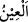

aralarında bir cinsî ilişki yoktur. Gerçi Kabil’in, ben cennet evlâdındanım, sözünden
hareketle bazıları cennette cinsî ilişkinin olduğunu söylemişlerse de bu görüş
benimsenmemiştir.
Üftâde (k.s.) şöyle demektedir: Şerîatın hükmü hiçbir zaman kalkmaz. Bazı hükümler
teklif yurdu olmamasına rağmen cennette de devam eder. Görmez misin ki, cennet
ehlinden her biri ancak Allah tarafından kendisine tahsis edilen bölgeden başka bir
yerde tasarrufta bulunamaz! Bundan dolayı Allah Teâlâ şöyle buyurmaktadır:
“Çadırlara kapanmış hûrîler” (er-Rahmân, 55/72) Yine cennet ehlinin ziyafet evleri
olup burada dostlarına ziyafet verirler ve nîmetlenirler. Fakat cennet ehlinin âileleri,
mahremleri olmayanlara görünmezler. Hüdâyî’nin Vâkıât’ında böyle geçer.
Sonra “__WORD__/hûr” kelimesi “__WORD__/havra” kelimesinin çoğulu olup beyaz mânâsındadır.
“__WORD__/‘İyn” kelimesi “__WORD__/ayna” kelimesinin çoğulu olup iri gözlü demektir. Sonuçta
hûrîler tertemiz ve beyaz cennet kadınlarıdır. Beyaz ve parlak oldukları için gözler
onlara kayar. Gözleri iri ve geniş olup gâyet güzeldir. Yahut gözlerinin beyazı çok
beyaz, siyahı da çok siyahtır.
Kàmûs’ta şöyle denilmiştir: “__WORD__/Hûr” gözün beyazının bembeyaz, siyahının da
simsiyah olmasıdır. Göz çukurunun oval olması, kirpiklerin ince olması, göz çevresinin
de beyaz olmasıdır. Yahut gözün beyazı ve siyahı beden beyazlığında yahut gözler
simsiyah olup ceylan gibidirler. Bu durum Âdem oğullarında bulunmadığı için insanlar
hakkında ancak mecâzen böyle denilir.
Müfredât kitabında şöyle denilmektedir: Gözler biraz parlak ve beyazdır. Siyaha da
çalar. Bu durum güzelliğin zirvesidir. Bunların dünyâ hanımları yahut başka hanımlar
olduğu konusunda ihtilâf vardır.
Hasan Basrî bunların, Allah’ın kendilerini bambaşka bir güzellikle yeniden yarattığı
dünyâ hanımları olduğunu söylemiştir. Ebû Hureyre bunların dünyâ hanımları
olmadığını söylemiştir.
55. Orada, güven içinde, her meyveyi isterler.
“Orada” canlarının çektiği her türlü meyvelerin hazırlanması için istek ve emirde
bulunurlar. Bu durum herhangi bir zaman yahut mekânla sınırlı da değildir. Bu durum
dünyâda gerçekleşmez. Yani dünyâ meyveleri her yerde ve her zamanda bulunmaz.
Onların belli mevsimleri vardır. Mevsiminden önce yahut sonra bulunmazlar.
“Güven içinde” yani Bunlar ne olursa olsun kendilerini üzecek her durumdan,
özellikle nîmetin elden çıkması yahut kesintiye uğraması yahut bunlardan çokça
faydalanmaktan meydana gelecek zarardan, dünyâda olduğu gibi kalplerin